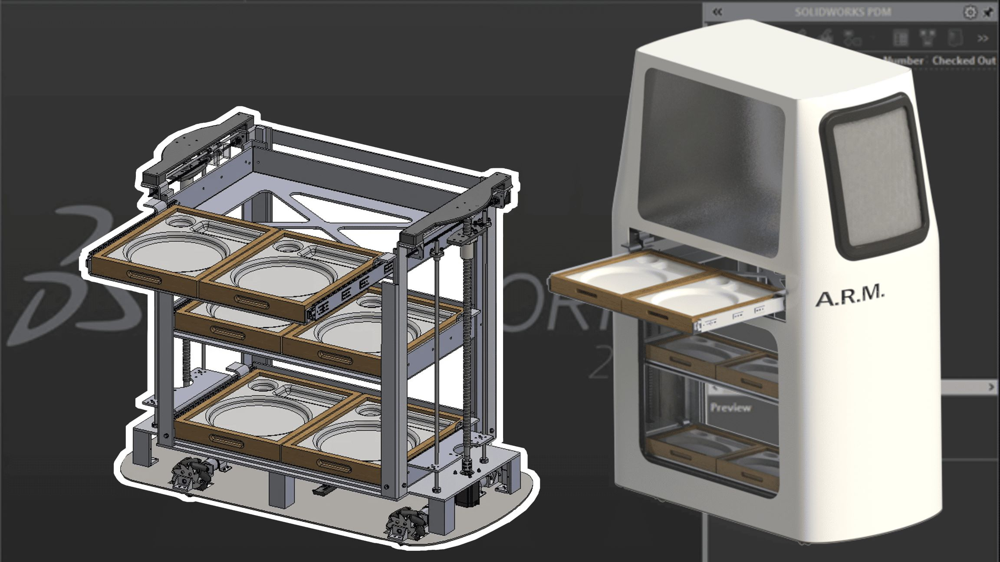
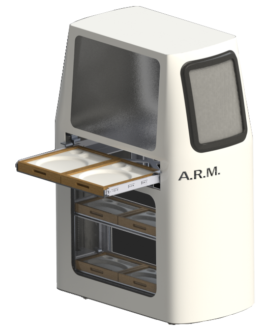
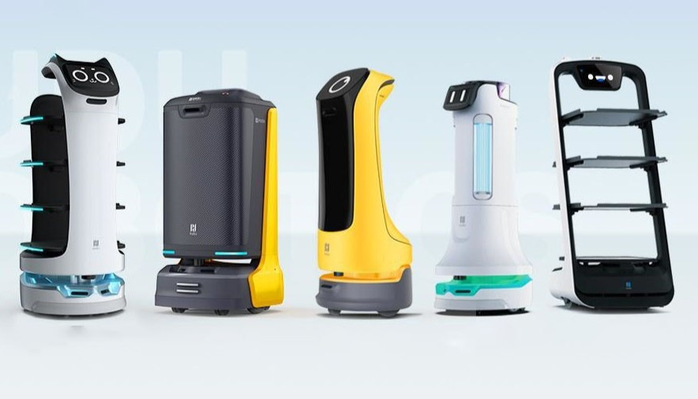
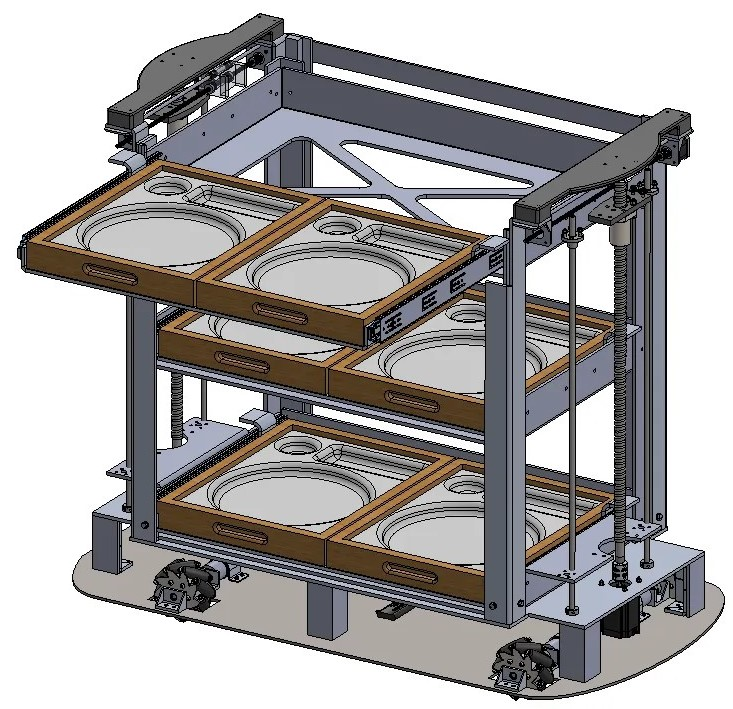
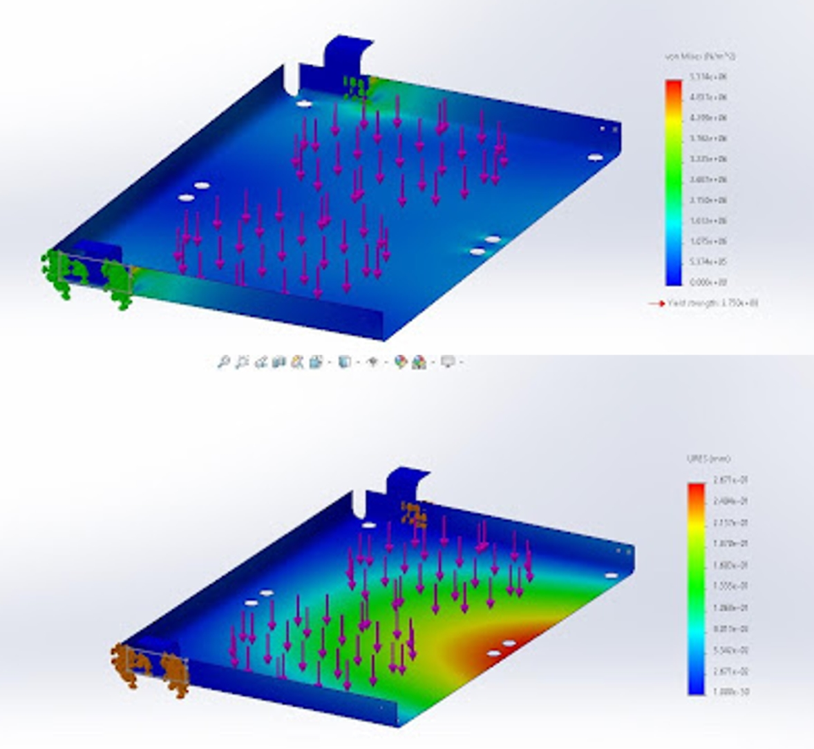
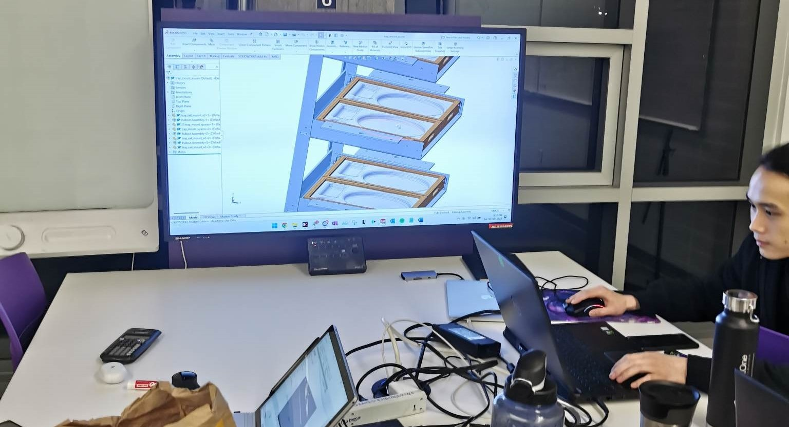

In 2023, the UBC Design League held a designathon competition with the prompt of assisting restaurant services through automation. University teams of 3-5 members were given 24 hours to brainstorm and design their proposed solution, with the final deliverables being a fully detailed CAD model and professional presentation pitch.
- As a team, we all collaborated on the ideation section and speccing of bot components.
- On my own, I worked on the electronics speccing and CAD model of a tray delivery mechanism.
Our Final Presentation

Ideation:
Our team prioritized an idea which could be realistically implemented concerning material choice, manufacturability, and stress conditions. We researched current market available products, what they offered, what they were missing, and how we might be able to improve on them. Most notable was the verticality of current designs, with a majority of them requiring patrons to reach for their trays.

Our designs aimed to circumvent this by designing a robot which added trays horizontally, lowering the center of mass, while also having a means of raising the food up and onto the tables of the patrons. We experimented with multiple iterations using scissor lifts, belts, pulleys, and carousels, ultimately settling on a lead screw design similar to 3D printer beds.
Delivery System:
In order to compact the delivery mechanism to vertical movement, I designed the elevation and tray delivery system around 2x lead screws, with 4 guiding rods. The framing was made of aluminum L-brackets, which could easily be cut to length and bolted in place.
Each pair of trays would be raised sequentially to table height, where a secondary motor would push the trays out for customer retrieval. This layer of trays would then be retracted, and the next layer would be raised to repeat the process.

CAD Modeling:
Our proposed design was modeled in SolidWorks making use of sheet metal tools to create the delivery system and framing, while surface modeling was employed for the trays themselves and the aesthetic shell. Electronics and fasteners were specced according to load scenarios, and STL models taken from McMaster Carr.
After completing the structural design, materials were assigned, with load bearing components being stainless steel, framing being aluminum, and HDPE plastics to ensure food-safe compatibility. Finally, the framing underwent FEA for deflection analysis

After an exhausting 24 hours, our team delivered a strong presentation to wrap up the competition weekend, explaining our ideation process and the inner workings behind the design decisions and mechanisms of choice. Our team was acknowledged for the most functional product of all those presented, with emphasis on the attention to detail.
In the end, this was a gratifying (and exhausting) opportunity to work through designing a product in a team environment under limited time. It was a great exercise of communication, getting ideas done quickly, and split-second decision making.
